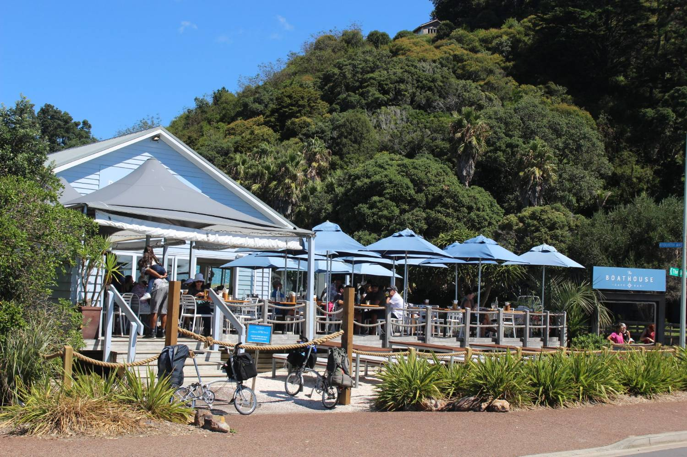
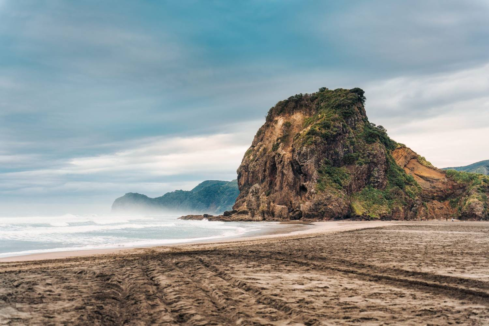
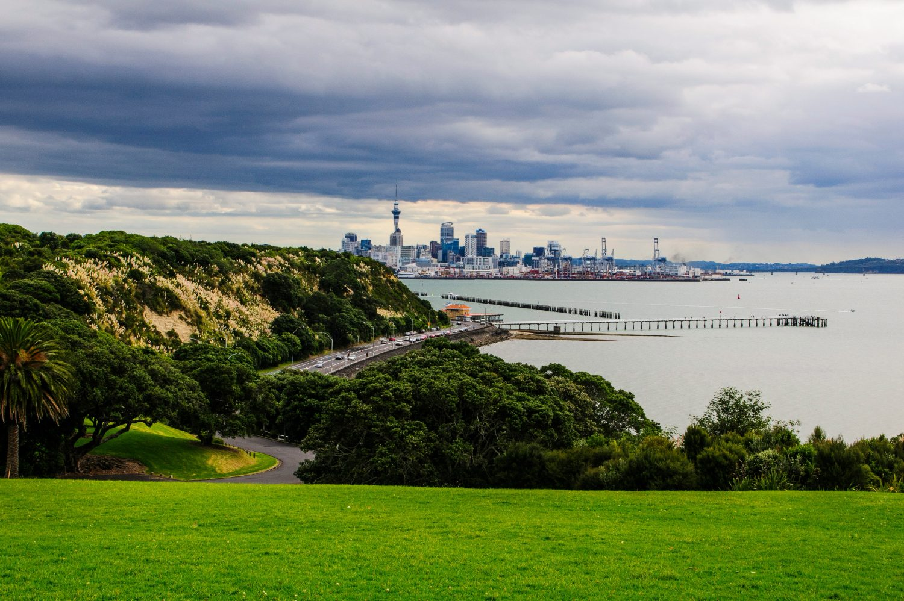

Tāmaki Makaurau — Tāmaki desired by many. A city of a million and a half people built across fifty volcanoes, between two harbours, with a rainforest on one side and an ocean on the other. The city sits on an isthmus barely a kilometre wide at its narrowest point. You are never more than about half an hour from water.
A welcome from Sophie
Moving to the other side of the world is a big thing to do. I know, because I did it.
Twenty-odd years ago I arrived in Australia on a working holiday visa, having backpacked my way across Southeast Asia, and then made my way to New Zealand. I lived and worked in Wellington. I managed a backpackers in Queenstown, where I met my partner. I stayed for years, and Aotearoa has never really left me.
So when I talk to a radiographer in Manchester or a sonographer in Johannesburg who is trying to work out whether to do this, I am not reading from a brochure. I remember the particular feeling of standing in a supermarket in a new country and not recognising a single brand. I remember how long it took before it stopped feeling like a very long holiday.
What I did not have, then, was anything like this guide. Most relocation material is either a list of visa requirements or a tourism advertisement, and neither of those tells you what a Tuesday actually looks like. That is the gap this is trying to fill: what it costs, where people live, what the winters are really like in an Auckland house, what you will miss, and what you will gain.
We have written it honestly, including the parts that are less flattering. If Auckland is not right for you, we would far rather you worked that out here, at your kitchen table, than eighteen thousand kilometres from home.
And if it is right — and for a great many clinicians it turns out to be — then this should save you a year of learning things the slow way.


Auckland in nine numbers
The shape of the place, before anything else.
1.7 million
People — roughly a third of New Zealand’s population, in one city
48
Volcanic cones across the city, most of them public parks
2 km
The narrowest point of the isthmus, harbour to harbour
200+
Ethnicities — one of the most diverse cities anywhere
4 in 10
Aucklanders born overseas. You will not be unusual
4
Major public hospitals, plus a fast-growing private sector
40 min
Coast to coast — sheltered gulf to Tasman surf
~NZ$700
Median weekly rent, three-bedroom house
Rarely
How often it frosts. Mild, humid, and green all year

How to use this guide
Nobody reads sixteen chapters in order. Where you start depends entirely on where you are in the decision — each chapter stands on its own and points to the two or three that follow naturally from it.
Still deciding
History & culture and Why Auckland, honestly — what living here actually feels like, and the honest trade-offs.
Job confirmed
Where clinicians live and Getting around — the chapters people spend longest in.
Date booked
Your first month — the four things that unlock everything else, in the order they have to happen.
Already here
Finding your people — the part that decides whether you stay.
What this is, and isn’t
What it is
- Written by people who have made this move and who place clinicians into it every week.
- Honest about cost, distance and the things that are harder here.
- Specific to Auckland. National topics are explained once in the master guide and linked, never repeated.
What it isn’t
- Immigration or tax advice. We point to the official source every time it matters.
- A tourism brochure. If Auckland doesn’t suit you, we’d rather you found that out here.
- Fixed. Figures are indicative and current as at July 2026 — costs, rules and timings change.